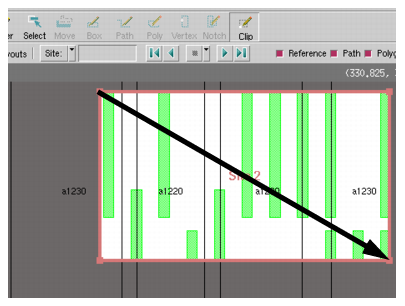
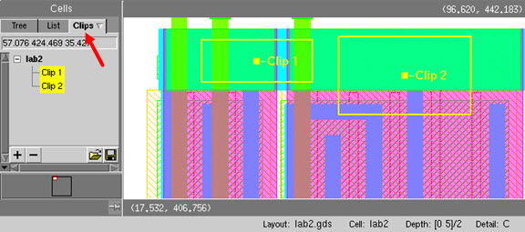
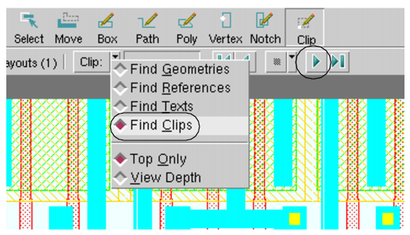

Calibre
DESIGNrev can load selected areas, referred to as clips, in the
layout viewer’s interactive GUI mode. Clips are areas in a layout
you mark and can save to a file, so that you can easily access and
view them later. Clips are independent of the layout. They can be
used as setup for incremental loading and for sharing selected areas
with other users.
Procedure
- Open a layout incrementally.
For example:
calibredrv -incr lab1.gds
- Click the Clips tab in the Cells Browser
to display the Clips palette.
- Click the Clip button in the Layout Viewer Toolbar.
- Left-click and drag the cursor
across part of the layout to create a bounding box for the clip.
Figure 2. Selected Clip
- Repeat this step to create
at least two different clips. Each clip you create should appear
in the Clips palette.
Figure 3. Clips Palette
A toolbar
located at the bottom of the Clips palette contains buttons for
adding (+), deleting (-), loading, and saving clips.
- In the Find Object Toolbar,
click the arrow and choose Find Clips.
Figure 4. Setting Find Toolbar
to Clips
- Step through each clip by
clicking the forward and backward arrows in the Find Object Toolbar.
When you step through clips,
the tool behaves similarly to stepping through polygons on a layer.
Figure 5. Clips Palette and Clips
- In the Find Object Toolbar,
click the arrow and choose Find Geometries.
- Select a clip in the Clips
palette to display its coordinates in the text box located at the
top of the palette.
- Double-click a clip to zoom
the view to the clip in the Layout Viewing Area.
- Click the right mouse button
on a clip to display a clip-specific popup menu.
- Click the Save Clips to File button to
save your clips to a file of clip coordinates.
You can identify a clips file
by the “.clip” extension.